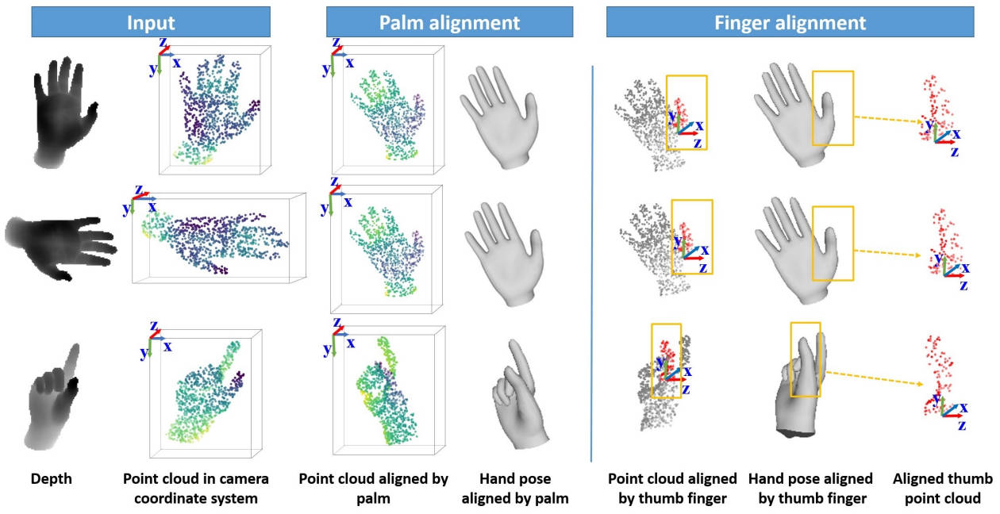
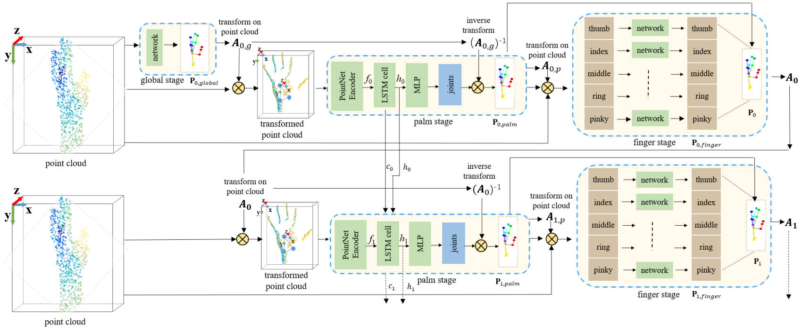

Recurrent 3D Hand Pose Estimation Using Cascaded Pose-guided 3D Alignments.
IEEE TPAMI, 2022.
[Paper] [Bibtex] [Code]
|
Dexin Zuo1,2
|
Jian Cheng1,2
|
|
Liang Chang6
|
Hongan Wang1,2
|
|

|
|
Illustration of our cascaded pose-guided 3D alignments and feature extraction in 3D space. Although the point clouds of the same hand pose from different viewpoints (row 1 vs. row 2) and the point clouds of different hand poses (row 1 and row 2 vs. row 3) are quite different, they become similar for palm and finger parts using palm alignment and finger alignment (see col 3 and col 7), respectively. The hand shapes in the fourth and sixth column are only used for a clear illustration of alignment transformations.
|
3D hand pose estimation is a challenging problem in computer vision due to the high degrees-of-freedom of hand articulated motion space and large viewpoint variation. As a consequence, similar poses observed from multiple views can be dramatically different. In order to deal with this issue, view-independent features are required to achieve state-of-the-art performance. In this paper, we investigate the impact of view-independent features on 3D hand pose estimation from a single depth image, and propose a novel recurrent neural network for 3D hand pose estimation, in which a cascaded 3D pose-guided alignment strategy is designed for view-independent feature extraction and a recurrent hand pose module is designed for modeling the dependencies among sequential aligned features for 3D hand pose estimation. In particular, our cascaded pose-guided 3D alignments are performed in 3D space in a coarse-to-fine fashion. First, hand joints are predicted and globally transformed into a canonical reference frame; Second, the palm of the hand is detected and aligned; Third, local transformations are applied to the fingers to refine the final predictions. The proposed recurrent hand pose module for aligned 3D representation can extract recurrent pose-aware features and iteratively refines the estimated hand pose. Our recurrent module could be utilized for both single-view estimation and sequence-based estimation with 3D hand pose tracking. Experiments show that our method improves the state-of-the-art by a large margin on popular benchmarks with the simple yet efficient alignment and network architectures.
|

|
|
Illustration of our recurrent hand pose network using cascaded pose-guided alignments.
We first convert the input hand foreground depth to point cloud.
Then we adopt multiple recurrent iterations to estimate the 3D hand pose.
Specifically, we introduce several LSTM modules among multiple palm stages to refine the hand pose.
In each recurrent iteration, we adopt a multi-stage network (i.e. global, palm and finger stages) to
predict hand joints by iterative pose regression and cascaded pose-guided 3D alignment,
and we adopt the hand pose of the previous iteration to align the input point cloud of the current iteration.
“PointNet Encoder” denotes the network before the last multi-layer perception (MLP) of PointNet++.
“A0,g” is the transformation via the estimated hand pose P0,global of the global stage in the initial recurrent
iteration, “At,p” are the transformations to align each finger via the estimated hand pose of the
palm stage Pt,palm in the t-th recurrent iteration, and “At” is the transformation via the
composited hand pose “Pt” of the palm stage and the finger stage in the t-th recurrent iteration. “⊗” denotes matrix multiplication.
|
|
|
X. Deng, D. Zuo, Y. Zhang, Z. Cui, J. Cheng, P. Tan,
L. Chang, M. Pollefeys, S. Fanello, H. Wang
Recurrent 3D Hand Pose Estimation Using Cascaded Pose-guided 3D Alignments. IEEE TPAMI, 2022. [Paper] [Bibtex] [Code] |
Acknowledgements
This work was supported in part by the National Key R\&D Program of China under Grant 2021YFF0307702, National Natural Science Foundation of China (No.~61473276), Beijing Natural Science Foundation (L182052), and the Distinguished Young Researcher Program, Institute of Software, Chinese Academy of Sciences.
The websiteis modified from this template.
|